Kubernetes 构造可自由扩展的 Jenkins
如果你是一名在职软件工程师，那你大概率已经使用过 Jenkins，至少听说过。
Jenkins 是目前最受欢迎的开源持续集成与持续交付（CI/CD）工具。为何它会受到如此多用户的追捧？诸如 CloudBees 这样的组织及相关优秀社区提供了坚实的帮助与支持，此外，一大批开发人员贡献了数以千计的插件，加上 Jenkins 良好的易用性，都让 Jenkins 从开源工具中脱颖而出。
基于以上特点，Jenkins 可以轻松实现以下事情：
- 结合主流版本管理工具，如 Git，Subversion 和 Mercurial；
- 集成代码质量管理工具，如 Sonarqube，Fortify；
- 使用 Maven 或 Gradle 构建 ；
- 使用 Junit 进行单元测试；
虽然 Jenkins 如此强大，但其入门使用却非常简单，你只需要准备一个 Web 应用服务器如 Tomcat 和一份可执行的安装文件 jenkins.war 即可。Jenkins 的运行方式有很多种，这里将介绍几种非常典型的方式。
独立的 Jenkins 服务器
在这种模式下，只有一个 Jenkins 服务器负责所有的构建任务并使用 TCP 连接部署到远程服务器上。这也是最简单的一种方式，你完全不需要担心其他可变因素。
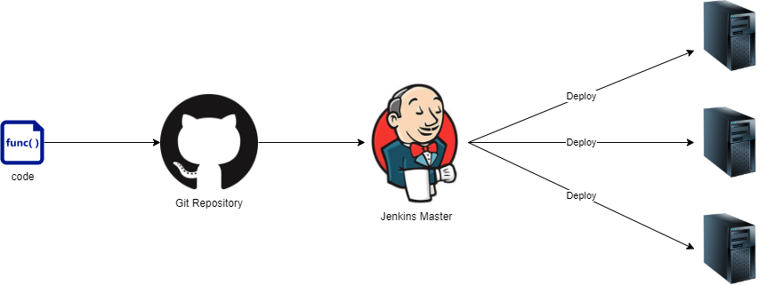
主从策略
采用单机模式运行 Jenkins 有一些弊端。
尽管单机模式你无需考虑多服务器和节点，但当大量的构建任务在同一时间运行时，服务器可能会负荷过重。你可能会考虑增加节点可并发执行的构建任务数量，但是很快就会遇到性能瓶颈。
为了解决这个问题，你可以将部分任务分发到其他的机器上去，即 Jenkins 从节点。Jenkins 从节点会运行一段程序与主节点进行通信，判断是够有可执行的构建任务。一旦 Jenkins 主节点调度安排好构建任务，就将其分发至相应的从节点。那我们的问题解决了吗？接着往下看。
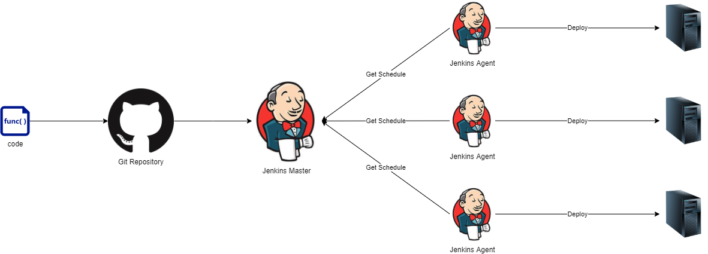
可扩展的 Jenkins
我们进一步来探索 Jenkins 的运行方式。当你的团队中还未建立 CI 时，你可能无需多台静态服务器来执行 Jenkins 任务。
当你无需 7*24 运行时，你的服务器可能会空闲，这时就产生资源浪费了。
但如果你正在使用容器技术如 Kubernetes，你可以让 Jenkins 的运行架构变得更高级。简单的说，就是让主节点处理调度构建任务，把任务分发任务到从节点进行执行，但是你并不需要事先就生成相应的从节点——当从节点需要使用时，会立刻应运而生。
这种运行架构可以解决下面的问题
Jenkins 服务器性能不再是问题
当你将 Jenkins 运行在 Kubernetes 集群中时，Jenkins 可以根据集群资源使用情况调节并启动。因为很多应用都共享一个集群，这样就能有效的节约资源——这种情况下 Jenkins 并不会运行在一个资源使用顶峰时候。
如果你将集群部署在云端，如 Google Cloud Platform，Jenkins 的运行将会变得更加轻松灵活。GKE 不仅仅可以根据容器的情况自我调节，还可以根据集群的负载情况添加或移除节点，如此一来就有了无限扩展的能力。
并行运行构建任务
你无需再仔细考虑同一时间并发执行的任务数目，Jenkins 会准备好一个从节点以便于运行相关的任务。
负载均衡
Kubernetes 也可以很好的实现负载均衡，它会让 Jenkins 从节点运行在最适合的服务器上，正因如此，构建任务的运行会更快且更有效率。
自我修复
如果你的构建任务或者从节点突然遇到问题了，这个时候你完全不用担心，Jenkins 会自动移除有问题的从节点并启动一个新的从节点。
这样会节省大量的故障排查时间，因为每个从节点不是必须存在的，如果某个从节点遇到障碍，Jenkins 会请求 Kubernetes 移除它并启动一个全新的从节点。就是这么简单。
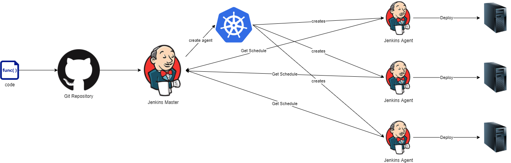
我们选择哪种运行架构
一开始，我们可能采用单机模式使用 Jenkins，半年内可能不会有什么问题，当使用的人越来越多，负载也越来越高，最终我们都不得不面临负载超出范围的问题。
当我们还没有使用 Kubernetes，解决办法可能是搭建主从架构或给单机服务器增加 CPU 和内存。我们可能会选择后面这种办法，因为这是最有效和最直接的方式。然而这种方法并不能彻底解决我们的问题。
如何解决这个问题
多次尝试后，我们公司 CTO 提出云部署的方式，我们决定将 Jenkins 部署到云端并和已有的 Kubernetes 集群结合在一起，除此之外，我们还将其他的工具也一并迁移到了云端。是不是很简单？让我们来验证一下。
我们有两个方案。一是将主节点运行在容器中的单机模式，另外一个方案就是利用将 Jenkins 运行在 Kubernetes 集群 。后者我们提出以下2层拓扑结构：
- Jenkins 主节点作为控制器，管理用户登陆及调度构建任务；
- 使用 Kubernetes 启动额外的 Jenkins 从节点容器，用户将在这些从节点容器中触发任务并运行，当任务成功执行完成后，容器会被移除；
接下来我们看看如何进行配置。
创建 Jenkins 主节点实例镜像
创建主节点实例镜像的 Dockerfile 如下：
version: "3"
FROM jenkins/jenkins:centos
# # Distributed Builds plugins
RUN /usr/local/bin/install-plugins.sh ssh-slaves
# # install Notifications and Publishing plugins
RUN /usr/local/bin/install-plugins.sh email-ext
RUN /usr/local/bin/install-plugins.sh mailer
RUN /usr/local/bin/install-plugins.sh slack
# # Artifacts
RUN /usr/local/bin/install-plugins.sh htmlpublisher
# # UI
RUN /usr/local/bin/install-plugins.sh greenballs
RUN /usr/local/bin/install-plugins.sh simple-theme-plugin
# # Scaling
RUN /usr/local/bin/install-plugins.sh kubernetes
# # install Maven
USER root
RUN yum update -y && yum install -y maven
USER jenkins
构建镜像
docker build -t <your-docker-registry>/jenkins-master:0.0.1 .
将镜像推送至中央仓库
docker push <your-docker-registry>/jenkins-master:0.0.1
这个 Dockerfile 很简单，不需要安装任何软件，因为主节点不用运行任何构建任务，而仅仅是管理各节点。你可以根据自己的需求修改。
自启动 Jenkins 主节点运行实例
接下来使用 Kubernetes mainfest 文件启动Jenkins 主节点的运行实例，文件内容如下：
apiVersion: v1
kind: ServiceAccount
metadata:
labels:
k8s-app: jenkins
name: jenkins
namespace: default
apiVersion: rbac.authorization.k8s.io/v1
kind: ClusterRoleBinding
metadata:
name: jenkins-crb
roleRef:
apiGroup: rbac.authorization.k8s.io
kind: ClusterRole
name: cluster-admin
subjects:
- kind: ServiceAccount
name: jenkins
namespace: default
apiVersion: v1
kind: PersistentVolumeClaim
metadata:
name: jenkins-pv-claim
labels:
app: jenkins
spec:
accessModes:
- ReadWriteOnce
resources:
requests:
storage: 30Gi
apiVersion: apps/v1
kind: Deployment
metadata:
name: jenkins-deployment
labels:
app: jenkins
spec:
replicas: 1
selector:
matchLabels:
app: jenkins
template:
metadata:
labels:
app: jenkins
spec:
serviceAccountName: jenkins
volumes:
- name: jenkins-pv-storage
persistentVolumeClaim:
claimName: jenkins-pv-claim
containers:
- name: jenkins
image: <your-docker-registry>/jenkins-master:0.0.1
env:
- name: JAVA_OPTS
value: -Djenkins.install.runSetupWizard=false
imagePullPolicy: Always
ports:
- containerPort: 8080
- containerPort: 50000
volumeMounts:
- mountPath: "/var/jenkins_home"
name: jenkins-pv-storage
securityContext:
privileged: true
imagePullSecrets:
- name: regcred
initContainers:
- name: volume-mount-data-log
image: busybox
imagePullPolicy: Always
command: ["sh", "-c", "chown -R 1000:1000 /var/jenkins_home"]
volumeMounts:
- mountPath: "/var/jenkins_home"
name: jenkins-pv-storage
apiVersion: v1
kind: Service
metadata:
name: jenkins-service
labels:
app: jenkins-svc
spec:
ports:
- port: 8080
targetPort: 8080
protocol: TCP
name: app
- port: 50000
targetPort: 50000
protocol: TCP
name: jnlp
selector:
app: jenkins
apiVersion: extensions/v1beta1
kind: Ingress
metadata:
name: jenkins-ingress
annotations:
nginx.ingress.kubernetes.io/add-base-url: "true"
nginx.ingress.kubernetes.io/proxy-body-size: "0"
spec:
rules:
- host: jenkins.example.com
http:
paths:
- path: /
backend:
serviceName: jenkins-service
servicePort: 8080
- host: jenkinsmaster.example.com
http:
paths:
- path: /
backend:
serviceName: jenkins-service
servicePort: 50000
manifest file 主要定义了以下内容：
- 默认命名空间中增加一个名为 Jenkins 的服务；
jenkins-crb,将 jenkins 服务与集群管理员cluster-admin绑定，这就允许 Jenkins 主节点和 Kubernetes 集群进行通信并执行一些集群管理的任务如启动或停止 pods；jenkins-pv-claim,作为一个持久化的数据卷，可以保存 30GB 的Jenkins 数据；- Jenkins 主节点运行实例启动后，Jenkins 服务和
jenkins-pv-claim数据卷对外暴露的端口分别是8080和50000 - 说明 Jenkins 主节点在集群中的 IP；
- 设置 Jenkins 对外提供的 URL；
上述配置生效后，你可以自行选择负载均衡方式或者从节点运行方式，也可以根据需要改变，然后使用 kubectl apply-f<manifest_file> 使文件生效。接下来你就可以在浏览器中通过Jenkins.example.com 上（或自行定义的url）来访问 Jenkins。
构建从节点运行实例镜像
相比主节点，从节点镜像有所不同，它们并不会管理你的构建任务而仅仅是执行而已。因此，我们需确保从节点符合运行的所有要求。
既然我们目前所构建的应用都是运行在容器上的微服务，我们需在 Jenkins 的从节点服务器上安装 docker，只有这样我们才能在从节点上运行 docker。
所用的Dockerfile 如下：
FROM jenkins/jnlp-slave
# # install Maven
USER root
RUN apt update -y
RUN apt install -y apt-transport-https ca-certificates curl gnupg2 software-properties-common
RUN curl -fsSL https://apt.dockerproject.org/gpg | apt-key add -
RUN apt-add-repository "deb https://apt.dockerproject.org/repo debian-$(lsb_release -cs) main"
RUN apt-get update
RUN apt-cache policy docker-engine
RUN apt-get install -y docker-engine=1.13.1-0~debian-stretch
VOLUME /root/.docker
RUN cd /usr/bin && curl -LO https://storage.googleapis.com/kubernetes-release/release/v1.17.0/bin/linux/amd64/kubectl
RUN chmod +x /usr/bin/kubectl
COPY config /root/.kube/
RUN wget -O /root/helm.tar.gz https://get.helm.sh/helm-v2.15.2-linux-amd64.tar.gz
RUN cd /root && tar -zxvf helm.tar.gz
RUN cd /root && mv /root/linux-amd64/helm /usr/bin/helm
RUN chmod +x /usr/bin/helm
RUN cp -a /usr/bin/helm /usr/local/bin/helm
RUN helm init --upgrade
USER root
构建镜像
docker build -t <your-docker-registry>/jenkins-slave .
将镜像推送至中央仓库
docker push <your-docker-registry>/jenkins-slave
在Jenkins 上配置 Kubernetes 集群
从节点的运行镜像已经推送至中央仓库后，下一步就是在 Jenkins 上设置一旦有构建任务触发时如何用 Kunernetes 启动一个运行容器。主要步骤分为以下两个步骤：
通过 kubectl cluster-info | grep master 获取 URL 或 Kunernetes API
在 Jenkins 的 cloud configure 界面 [your_jenkins_url]/configureClouds/）配置如下：
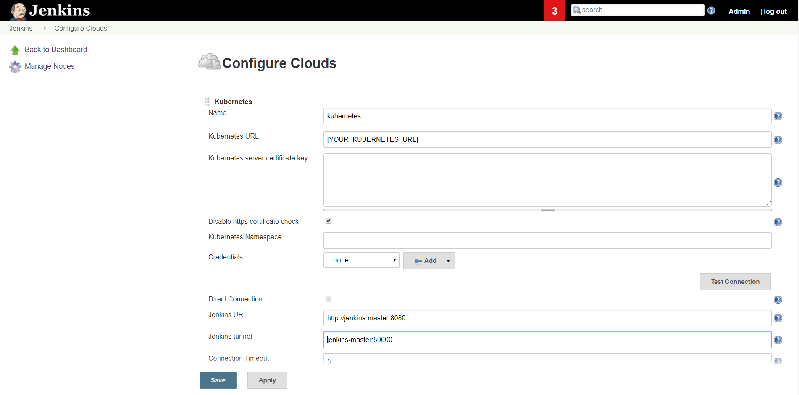
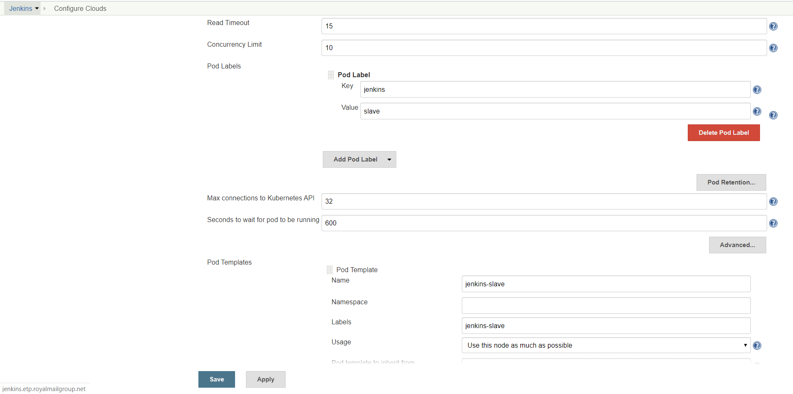
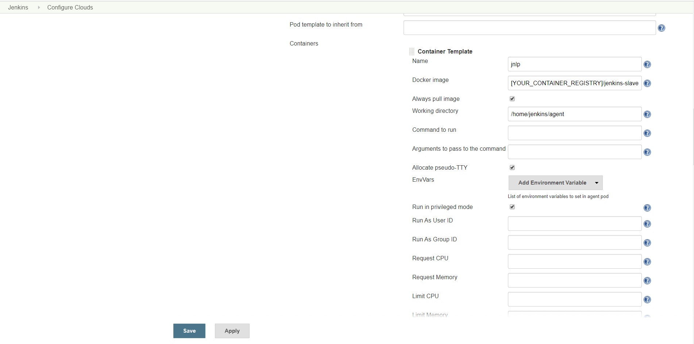
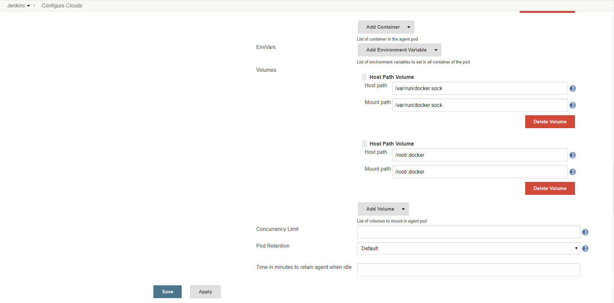
最后记得保存以上设置
禁用主节点执行器
为了确保主节点仅仅作为控制器而不执行具体的构建任务，我们需要将主节点的 executors 设置为0.
访问[your_jenkins_url]/computer/(master)/configure ,根据下图指示executors 设置为0并保存
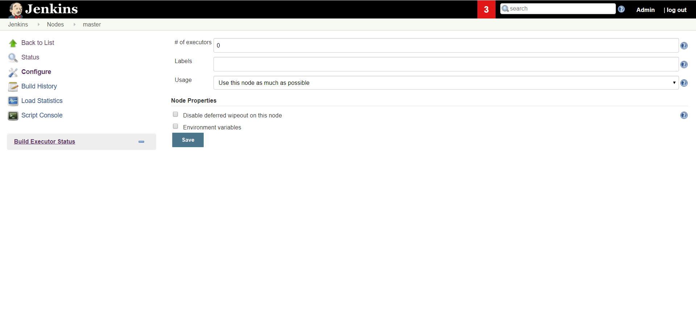
测试配置是否生效
创建一个自由风格任务，并命名为 job-1,并根据以下步骤进行配置
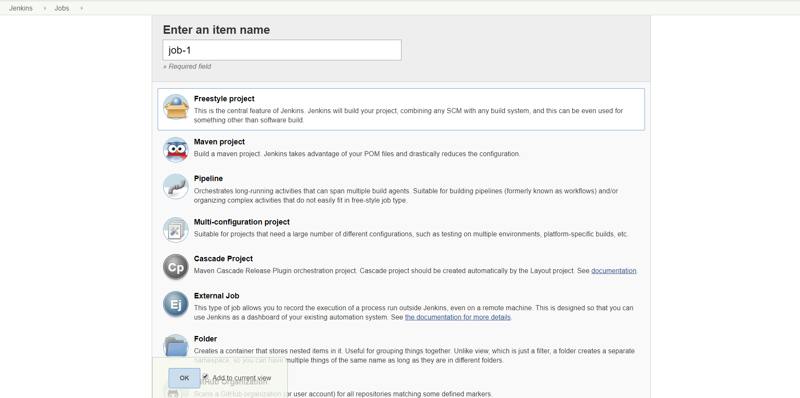
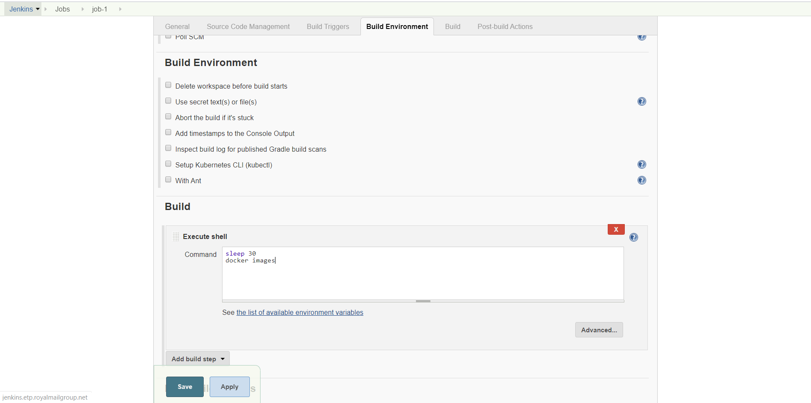
创建一个和 job-1 完全一样的任务，命名为 job-2

同时启动两个任务，此时你会注意到这两个构建任务都分别在 kubernetes 生成了一个新的 pod ，并且同时执行着。

在控制台查看两个任务的输出：
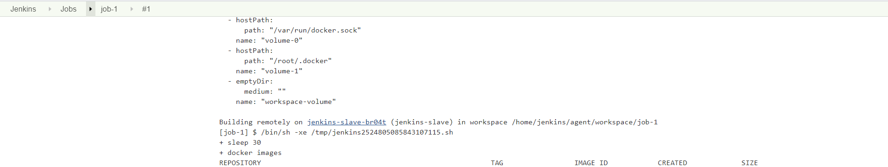